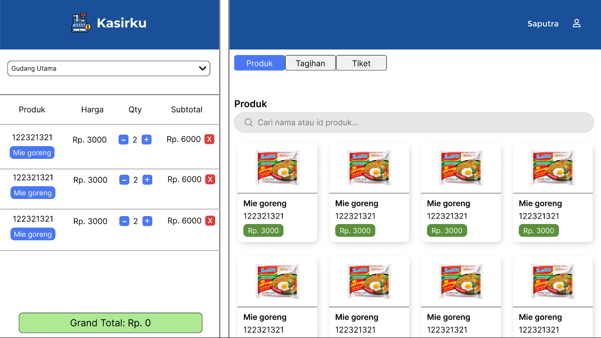
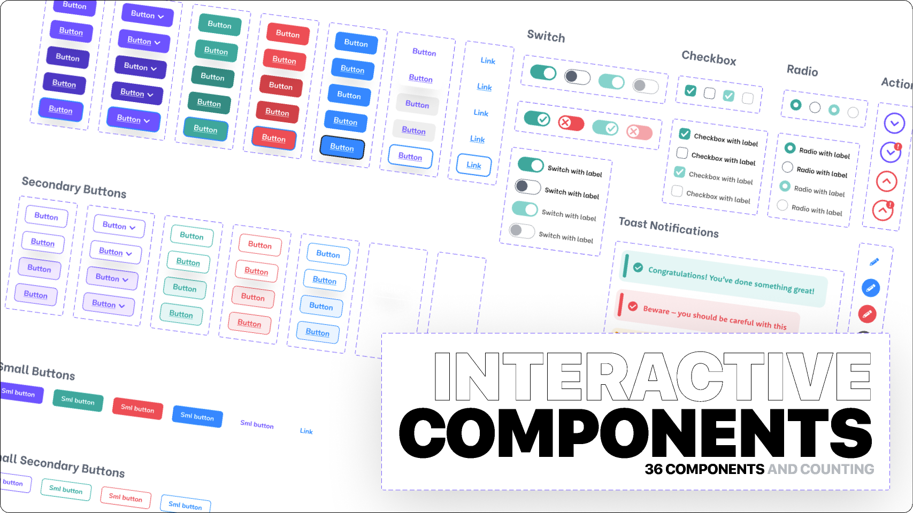

Membuat Sebuah Sistem Kasir Sederhana
2025 Dashboard, user experience design

Aspek
Selain dari desain tampilan dalam sebuah sistem kasir tentunya ada aspek lain yang dihitung seperti pemilihan component icon, warna dan layout agar mendukung kemudahan dalam penggunaan sistem kasir itu sendiri oleh user serta kecepatan dalam proses transaksi pada sebuah toko atau usaha kecil.
Components Icon
Pemilihan component icon yang tepat sangat penting dalam sebuah sistem kasir agar user dapat dengan mudah mengenali fungsi dari setiap tombol atau menu yang ada. Icon yang jelas dan intuitif akan mempercepat proses navigasi dan mengurangi kesalahan dalam penggunaan.
 